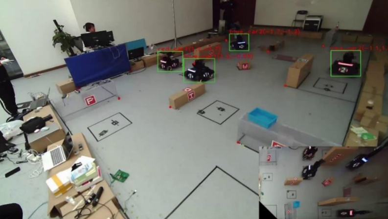

ICRA RoboMaster University AI Challenge
RMUA 2022 was a competition where two teams, each with two autonomous robots, battled in a rune-filled arena. Teams programmed their robots to navigate, make autonomous decisions, and shoot projectiles to reduce the opponent’s HP. The team with the highest remaining robot HP at the end won.
Our team secured the 3rd prize in May 2022. I was primarily responsible for the robot’s localization and navigation.
Multi-Sensor Fusion Localization: Installed two lidars at different heights on the robot to fuse point cloud data from multiple sensors, enhancing positioning accuracy.

Addressing Environmental Challenges: The highly symmetrical arena led to positioning ambiguities. Additionally, collisions and tire slippage affected odometry-based localization. We utilized a sentry camera at the arena’s edge to capture the robot’s position, assisting in accurate localization.
Path Planning and Obstacle Avoidance:
- Static Mapping: Used the Cartographer algorithm.
- Dynamic Obstacle Avoidance: Employed the S2 radar on the robot’s head to detect enemy vehicles, as the chassis-mounted A3 radar was obstructed by wheels.
- Global Path Planning: Implemented the A* algorithm at 2Hz.
- Local Path Planning: Utilized the TEB algorithm to optimize trajectories, adjusting parameters for increased speed and smoothness. The robot achieved an average speed of 1.3 m/s and a maximum speed of 1.75 m/s.

Enhanced Decision-Making: Integrated enemy robot data from the sentry camera into the costmap with an expansion zone. This prevented the robot from approaching too closely, avoiding potential ramming or projectile hits, and complemented the LIDAR’s obstacle scanning limitations.
2022 WeChat Mini Program Development Competition
From March to May 2022, I led a team to develop the V5robot mini program, participating in the WeChat Mini Program Competition and winning the second prize in the Northwest Region.
V5robot is a platform promoting robotics education, featuring high interactivity, easy accessibility, and comprehensive content. It covers robotics theory modules such as navigation, vision, and control, and includes mini-games for added engagement. Additionally, V5robot serves as a recruitment platform for the Soccer Robotics Base at Northwestern Polytechnic University.

Point Pair Feature-Based Pose Estimation
Point Pair Feature (PPF) is a 4-dimensional feature derived from 3D point clouds, defined as follows:
The PPF method consists of:
- Offline:
- Downsample the model point cloud.
- Extract PPF features and store them in a hash table.
- Online:
- Downsample the scene point cloud.
- Extract PPF features and match them with the hash table.
- Generate pose hypotheses through voting.
- Select the transformation matrix with the highest votes.
During my internship at the ASGO-3D Lab at Northwestern Polytechnic University, I implemented the center voting-based PPF pose estimation algorithm from the paper “Efficient Center Voting for Object Detection and 6D Pose Estimation in 3D Point Cloud”. This method transforms implicit PPF voting into explicit center voting, enhancing pose hypothesis generation, clustering, and verification. I tested the implementation on the U3OR dataset.